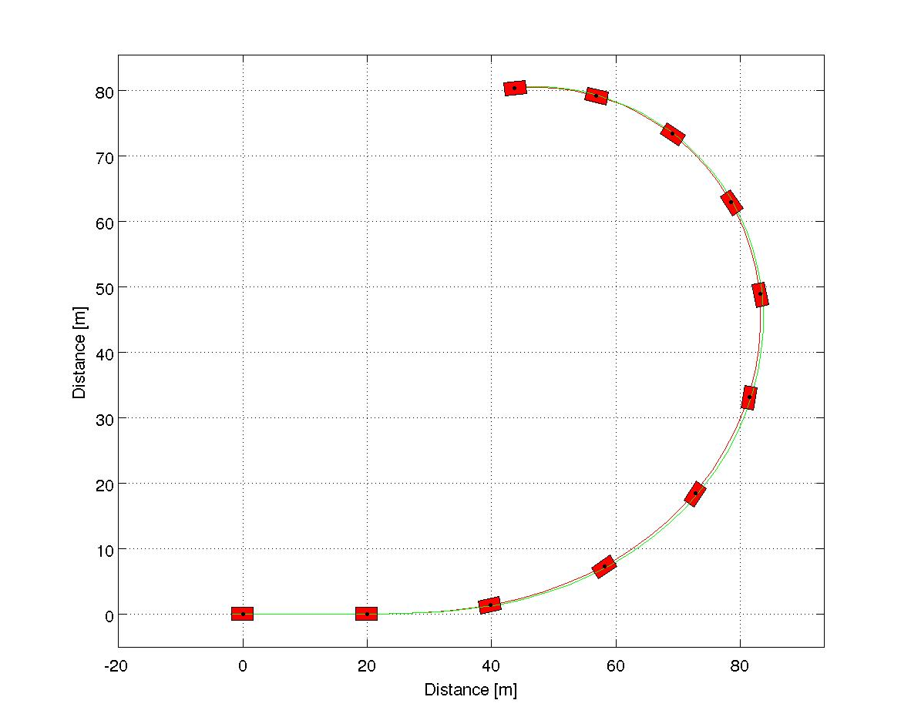

Running the Simulink model
sim('SimpleVehicleSimulink');Each vehicle state variable goes to a scope. And the output of the model is saved in workspace.
Results
To generate the graphics the same model used in SimpleVehicleSFunction.m must be defined.
% Choosing tire model TireModel = TirePacejka(); % Defining tire parameters TireModel.a0 = 1; TireModel.a1 = 0; TireModel.a2 = 800; TireModel.a3 = 3000; TireModel.a4 = 50; TireModel.a5 = 0; TireModel.a6 = 0; TireModel.a7 = -1; TireModel.a8 = 0; TireModel.a9 = 0; TireModel.a10 = 0; TireModel.a11 = 0; TireModel.a12 = 0; TireModel.a13 = 0; % Choosing vehicle model VehicleModel = VehicleSimpleNonlinear(); % Defining vehicle parameters VehicleModel.mF0 = 700; VehicleModel.mR0 = 600; VehicleModel.IT = 10000; VehicleModel.lT = 3.5; VehicleModel.nF = 2; VehicleModel.nR = 2; VehicleModel.wT = 2; VehicleModel.muy = .8; VehicleModel.tire = TireModel; simulator = Simulator(VehicleModel, tout); % Retrieving states from Simulink model simulator.XT = simout.Data(:,1); simulator.YT = simout.Data(:,2); simulator.PSI = simout.Data(:,3); simulator.VEL = simout.Data(:,4); simulator.ALPHAT = simout.Data(:,5); simulator.dPSI = simout.Data(:,6); g = Graphics(simulator); g.TractorColor = 'r'; g.Frame();
g.Animation();
As expected the vehicle starts traveling in a straight line and starts a turn at \(t = 1 \, s\) because of the step function.